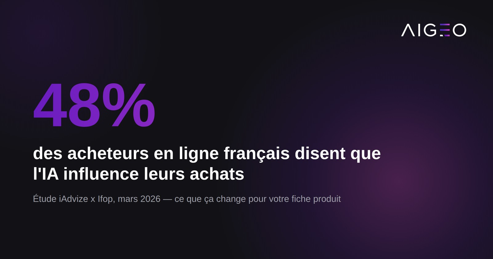
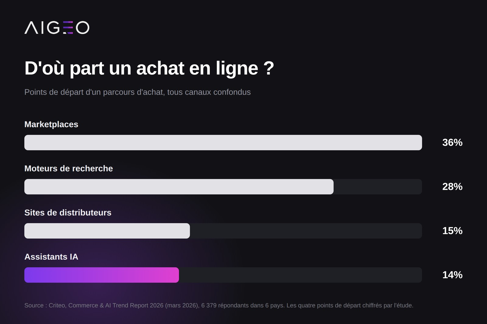

48 % des acheteurs en ligne français reconnaissent que l'IA influence leurs décisions d'achat, selon une étude iAdvize x Ifop de mars 2026. Mais ces mêmes assistants ne représentent encore que 14 % des points de départ d'un parcours d'achat, derrière les marketplaces, les moteurs de recherche et les sites de distributeurs. Voici ce que ces chiffres disent réellement du comportement d'achat conversationnel, et ce qu'une marque à conseil doit en tirer.

Combien d'acheteurs consultent une IA avant d'acheter ?
Selon l'étude iAdvize x Ifop menée fin janvier 2026 auprès de 1 051 personnes représentatives de la population française :
- 63 % des Français utilisent déjà l'IA générative, soit 19 points de plus qu'un an auparavant.
- 62 % des utilisateurs d'IA la consultent avant un achat, pour s'informer, comparer ou obtenir une recommandation.
- 48 % des acheteurs en ligne estiment que l'IA influence leurs décisions, un taux qui grimpe à 85 % chez les utilisateurs réguliers.
- 45 % des acheteurs font confiance à l'IA pour choisir un produit, 79 % chez les utilisateurs réguliers.
- 20 % des Français ont déjà utilisé un assistant shopping IA directement sur un site marchand.
Ces chiffres montrent une consultation large, mais pas une bascule totale : l'IA s'ajoute au parcours d'achat, elle ne le remplace pas encore.
Les assistants IA remplacent-ils les moteurs de recherche pour le shopping ?
Pas selon le Commerce & AI Trend Report 2026 de Criteo (mars 2026), basé sur une enquête auprès de 6 379 consommateurs dans six pays et une analyse du trafic de 500 marchands américains :
- Les assistants IA se classent quatrième point de départ d'un achat, avec 14 % des cas.
- Les marketplaces arrivent en tête avec 36 %, suivies des moteurs de recherche classiques avec 28 % et des sites de distributeurs avec 15 %.
- 96 % des utilisateurs d'IA recourent aussi à d'autres canaux dans le même parcours d'achat : aucune bascule exclusive vers le conversationnel n'est observée.
- 59 % des utilisateurs de recherche vocale ou par image déclarent que cela augmente leur propension à acheter.
- Côté freins, 55 % des répondants restent prudents sur la transmission de données bancaires à une IA, et 52 % s'inquiètent de contenus faux ou biaisés.

Ce que ça signifie pour une marque à conseil
L'IA conversationnelle est un canal de découverte et de comparaison supplémentaire, pas un remplacement du parcours existant. Une marque de literie ou de nutrition animale n'a pas à choisir entre optimiser pour Google et optimiser pour ChatGPT : les deux canaux coexistent dans le même parcours d'achat, souvent dans la même session.
À quoi ressemble une requête d'achat conversationnelle ?
Deux lancements récents illustrent comment ces requêtes sont traitées côté assistant :
- ChatGPT Shopping Research, déployé par OpenAI le 1er décembre 2025, génère des comparaisons structurées à partir d'instructions précises de l'utilisateur, avec des recommandations basées sur « la pertinence, les préférences utilisateur et les sources publiques, pas sur des accords publicitaires », selon OpenAI. L'achat se termine encore sur le site du marchand, sauf pour les partenaires du dispositif Instant Checkout, disponible aux États-Unis.
- L'assistant shopping de Perplexity, lancé le 25 novembre 2025, fonctionne à l'intérieur de l'interface de recherche : l'utilisateur pose une question du type « quel manteau d'hiver pour un usage urbain », et l'assistant s'appuie sur l'historique de conversation pour afficher des fiches produits avec avis, avec un bouton d'achat direct via PayPal.
Dans les deux cas, la requête n'est pas un mot-clé mais une phrase complète, souvent avec un contexte d'usage : « pour dos sensible », « pour un usage urbain ». C'est ce contexte que le modèle doit pouvoir rattacher à un produit précis dans votre catalogue.
Qu'est-ce qui influence une recommandation IA, et qu'est-ce qui ne l'influence pas ?
D'après les communications d'OpenAI sur ChatGPT Shopping Research, les recommandations ne sont pas des emplacements publicitaires : elles reposent sur la pertinence du contenu et sur des sources jugées fiables par le modèle. Autrement dit, un budget média ne suffit pas à faire apparaître une marque dans ces résultats. C'est la structuration du contenu produit qui joue.
Ce qu'il faut retenir
- 48 % des acheteurs en ligne français disent que l'IA influence leurs décisions d'achat, un taux qui grimpe à 85 % chez les utilisateurs réguliers (iAdvize x Ifop, terrain fin janvier 2026, publié le 6 mars 2026, 1 051 répondants).
- Les assistants IA ne représentent que 14 % des points de départ d'un parcours d'achat, derrière les marketplaces (36 %), les moteurs de recherche (28 %) et les sites de distributeurs (15 %) (Criteo, Commerce & AI Trend Report 2026, mars 2026, 6 379 répondants dans 6 pays).
- 96 % des utilisateurs d'IA combinent ce canal avec d'autres dans le même parcours d'achat, aucune bascule exclusive n'est observée (Criteo, mars 2026).
- ChatGPT Shopping Research, déployé le 1er décembre 2025, indique baser ses recommandations sur la pertinence du contenu et des sources publiques, pas sur des accords publicitaires.
- L'assistant shopping de Perplexity, lancé le 25 novembre 2025, permet un achat direct via PayPal sans quitter l'interface de conversation.
FAQ
Rarement de bout en bout. 20 % ont utilisé un assistant shopping IA sur un site marchand, mais 96 % des utilisateurs d'IA combinent ce canal avec d'autres, marketplace ou moteur de recherche, dans le même parcours.
Non. C'est une phrase complète avec un contexte d'usage, « pour dos sensible » ou « pour un usage urbain », pas une suite de mots-clés. Le contenu produit doit pouvoir répondre à ce contexte, pas seulement à un nom de produit.
Non, selon les communications d'OpenAI sur ChatGPT Shopping Research : les recommandations reposent sur la pertinence du contenu et des sources jugées fiables, pas sur des accords publicitaires.
Et votre marque, elle apparaît ?
Nous posons les questions d'achat de votre catégorie à une IA, sans jamais nommer votre marque, et nous vous montrons le résultat avec les captures datées.
- E-commerce Nation, « IA et e-commerce : près d'un Français sur deux influencé dans ses achats en ligne, selon l'étude iAdvize x Ifop », 6 mars 2026. Lien
- IT Social, « L'IA redessine la découverte produit sans déplacer l'acte d'achat vers les assistants conversationnels », 25 mars 2026, données du Commerce & AI Trend Report 2026 de Criteo. Lien
- E-commerce Mag, « ChatGPT dévoile Shopping Research », 1er décembre 2025. Lien
- Blog du Modérateur, « Après ChatGPT, Perplexity introduit son assistant dédié au shopping », 26 novembre 2025. Lien